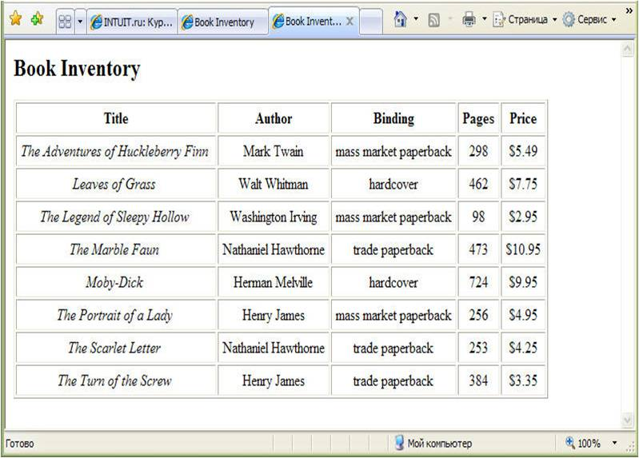
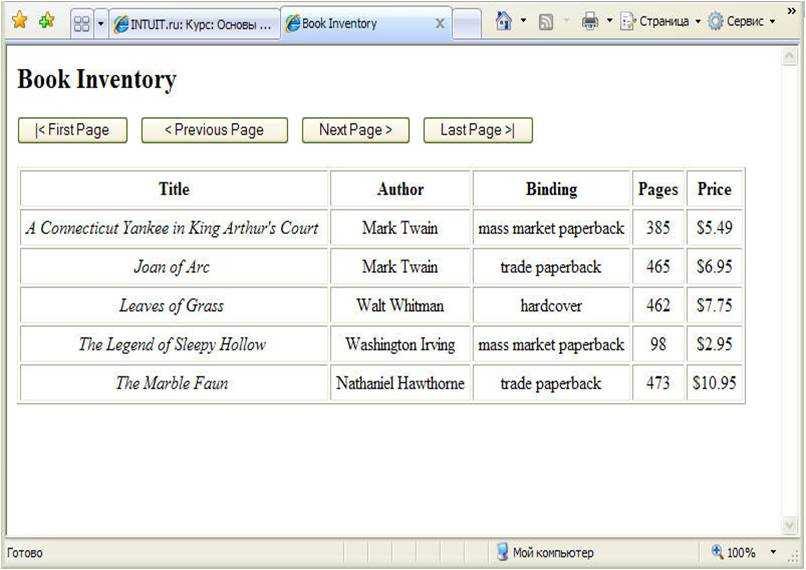
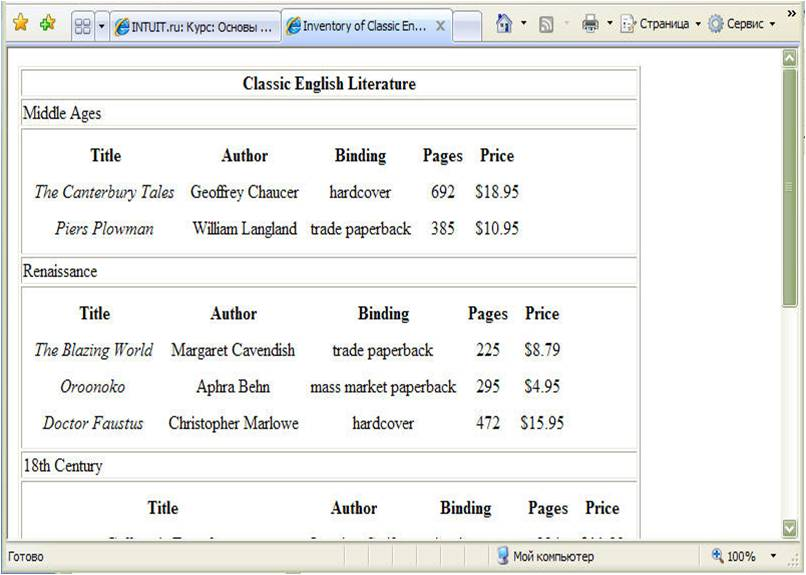
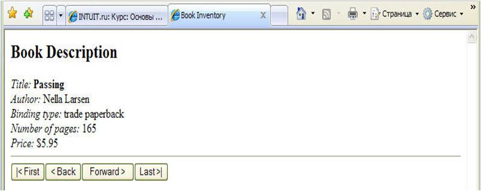
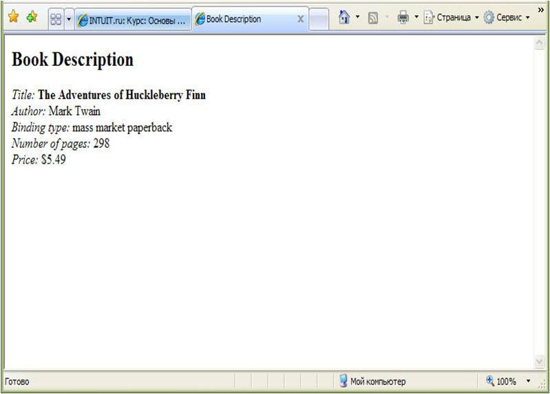
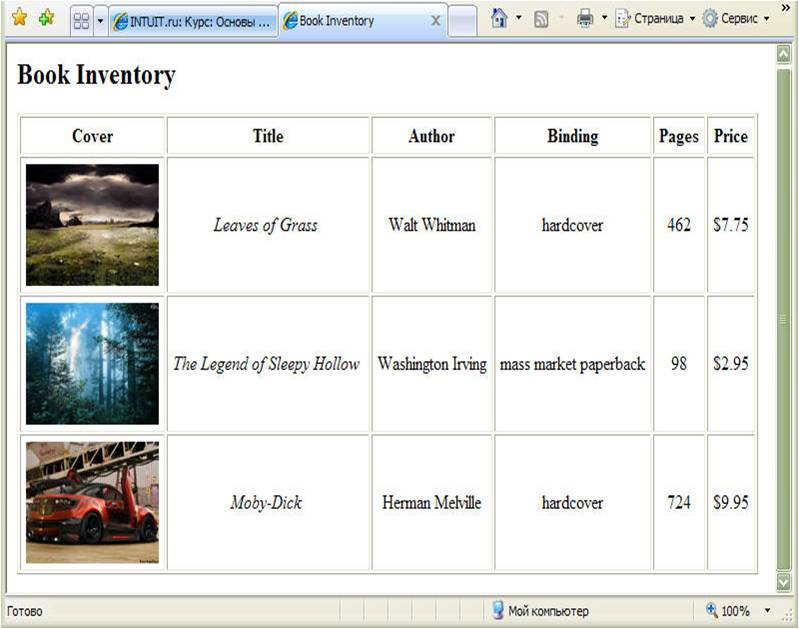
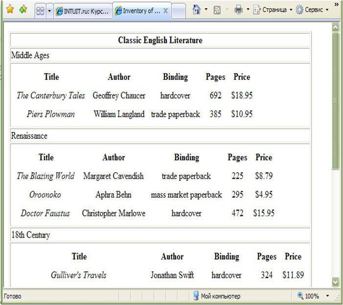
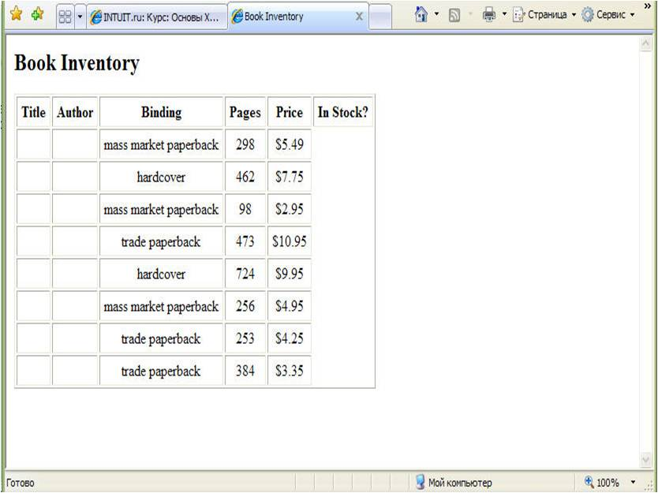
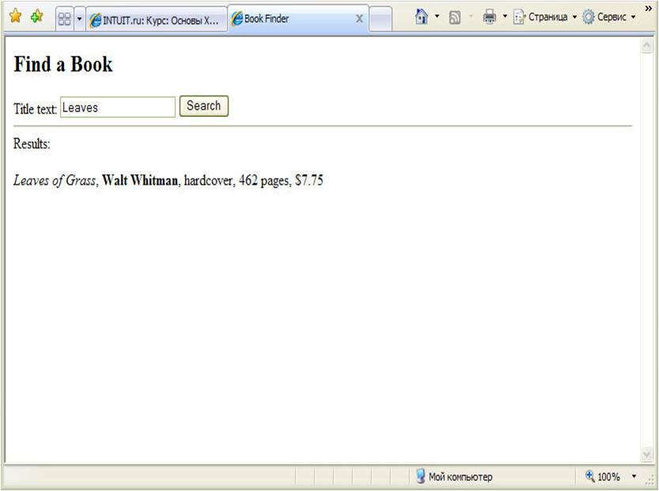

Лекция №8
В этой лекции вы
прежде всего познакомитесь с основной терминологией, используемой для
примитивов, а также с различными способами классификации примитивов. Затем вы
узнаете, как объявлять каждый из примитивов различных типов и как вставлять
примитивы в ваш документ в необходимом месте. Далее вы узнаете, как использовать
возможности XML, которые позволяют вам вставлять любые типы символов в любом
контексте: как ссылки на символ и как ссылки на примитивы. В конце лекции
имеется упражнение, которое позволит вам попрактиковаться в использовании
примитивов в полном XML-документе.
Механизм примитивов в XML является
средством повышения производительности, а также способом встраивать различные
типы данных в ваш XML-документ. В XML-документе вы можете определить часто
используемый блок XML-текста как примитив, что позволяет вам быстро вставлять
текст в нужное место. Вы можете также определить как примитив внешний файл,
чтобы иметь возможность включать данные файла в вашем документе; эти данные
могут содержать XML-текст, другой текст, либо не текстовые данные. Вы
определяете примитив в описании типа документа (DTD) с использованием
синтаксиса, аналогичного тому, который используется для объявления элемента или
атрибута в валидном XML-документе. О DTD и объявлениях типа документа,
содержащего их.
Связывание данных является первым
из методов отображения XML-документа с традиционной HTML-страницы, с которым вы
познакомитесь. Отображение XML с HTML-страниц дает вам возможность
воспользоваться как преимуществами хранения данных в XML-документе, с его гибким
синтаксисом для структурирования данных и маркировки каждого фрагмента
информации, так и имеющееся богатство форматирования, и динамическое
программирование HTML.
При связывании данных вы
соединяете XML-документ с HTML-страницей, а затем встраиваете стандартные
HTML-элементы, такие как SPAN или TABLE, в отдельные XML-элементы. HTML-элементы
затем автоматически отображают содержимое XML-элементов, в которые они
встроены.
Связывание данных, как и другие
методы, о которых вы узнаете в этой лекции, работает только с XML-документом,
который симметрично структурирован, например, как базы данных, – а именно,
элементы документа могут быть интерпретированы как набор записей и полей. В
простейшем случае такой документ состоит из корневого элемента, содержащего
множество элементов одинакового типа (записи), каждый из которых имеет
одинаковый набор дочерних элементов, все из которых содержат символьные данные
(поля). В качестве примера можно привести документ Inventory.xml, который
представлен в Листинге 8.1. Элементы BOOK этого документа могут
быть интерпретированы как записи, а элементы, вложенные в каждый элемент BOOK
(TITLE, AUTHOR и т.д.), могут быть интерпретированы как поля. Далее в этой
лекции вы подробнее узнаете о специфических структурах документа, которые
подходят для связывания данных. Если структура документа такова, что не
допускает связывание данных, можно использовать метод создания
сценариев.
В этой лекции вы прежде всего
получите сведения о двух основных шагах при связывании данных. Затем вы узнаете
в подробностях, как привязать XML-документ к HTML-странице (первый основной шаг)
и как сцеплять элементы HTML с элементами XML (второй основной шаг). Наконец, вы
узнаете, как программировать Web-страницу с помощью сценариев, которые
используют в качестве базового объекта программирования связанные данные (а
именно, Data Source Object, или DSO). Вы можете применять эти сценарии совместно
со связыванием данных – либо независимо.
В лекции 9 вы познакомитесь с совершенно иным способом
для доступа управления и отображения XML-документа с HTML-страницей. Этот метод
вы можете использовать для XML-документов любого типа, независимо от вида его
логической структуры.
Основные
шаги
Вот два основных этапа при
связывании данных:
- Установка связи XML-документа с
HTML-страницей, на которой вы хотите отобразить данные XML. Этот шаг обычно
реализуется включением HTML элемента с именем XML в HTML-страницу. Например,
следующий элемент на HTML-странице связывает XML-документ Book.xml со
страницей:
<XML ID="dsoBook"
SRC="Book.xml"></XML>
- Сцепление HTML элементов с
XML-элементами. Когда вы сцепляете HTML элементы с XML-элементом, HTML-элемент
автоматически отображает содержимое XML-элемента. Например, следующий элемент
SPAN на HTML-странице сцеплен с элементом AUTHOR связанного XML-документа:
<SPAN
DATASRC="#dsoBook" DATAFLD="AUTHOR"></SPAN>
В результате HTML-элемент SPAN
отображает содержимое XML-элемента AUTHOR.
Базовая технология связывания
данных в действительности столь же проста, как в этом примере, хотя в дальнейшем
вы познакомитесь с различными вариациями и способами использования этой
технологии.
Шаг первый: установка связи
XML-документа с HTML страницей.
Чтобы отобразить XML-документ на
HTML странице, вы должны установить его связь со страницей. Самый простой путь
сделать это в Microsoft Internet Explorer 7 – включить в страницу HTML-элемент с
именем XML, так называемый фрагмент данных. Вы можете использовать одну из двух
различных форм записи для фрагмента данных.
В первой форме весь текст
XML-документа помещается между начальным и конечным тегами XML. Вот пример
фрагмента данных на следующей HTML-странице:
<HTML>
<HEAD>
<TITLE>Book
Description</TITLE>
</HEAD>
<BODY>
<XML
ID="dsoBook">
<?xml
version="1.0"?>
<BOOK>
<TITLE>The Adventures of Huckleberry
Finn</TITLE>
<AUTHOR>Mark Twain</AUTHOR>
<BINDING>mass market
paperback</BINDING>
<PAGES>298</PAGES>
<PRICE>$5.49</PRICE>
</BOOK>
</XML>
</BODY>
</HTML>
Во второй форме записи HTML-элемент с
именем XML остается пустым и содержит только URL XML-документа. Вот пример
фрагмента данных на HTML-странице:
<HTML>
<HEAD>
<TITLE>Book
Description</TITLE>
</HEAD>
<BODY>
<XML ID="dsoBook"
SRC="Book.xml"></XML>
<!-- другие элементы HTML …
-->
</BODY>
</HTML>
В предыдущем примере текст
XML-документа должен содержаться в отдельном файле
Book.xml:
<?xml
version="1.0"?>
<!-- Имя файла: Book.xml
-->
<BOOK>
<TITLE>The Adventures of Huckleberry
Finn</TITLE>
<AUTHOR>Mark Twain</AUTHOR>
<BINDING>mass market
paperback</BINDING>
<PAGES>298</PAGES>
<PRICE>$5.49</PRICE>
</BOOK>
Вторая форма более соответствует
основам философии XML, согласно которой собственно данные (XML-документ)
хранятся отдельно от информации по их форматированию и обработке (таблицы стилей
или, в данном случае, HTML-страницы). Вторая форма облегчает работу с
XML-документом, особенно если один документ отображается на нескольких различных
HTML-страницах. В рассматриваемых в этом курсе примерах вы будете иметь дело
только со второй формой.
Примечание.
Имейте в виду, что элемент с именем XML, используемый для создания фрагмента
данных, не является собственно XML-элементом. Это просто HTML-элемент, который
содержит XML-элементы. Следовательно, использование синтаксиса XML для пустого
элемента:
<XML ID="dsoBook" SRC="Book.xml
/><!-- недопустимо-->
Вы должны присвоить атрибуту ID
фрагмента данных уникальный идентификатор, который используете для доступа к
XML-документу с HTML-страницы. (В предыдущем примере в качестве значения для ID
выступает «dsoBook».)
При второй форме записи фрагмента
данных вы присваиваете атрибуту SRC URL файла, содержащего данные XML. Вы можете
использовать полный URL, как в следующем примере:
<XML ID="dsoBook" SRC=http://www.my_domain.com/ Book.xml>
</XML>
Чаще, однако, вы используете
частичный URL, который задает местонахождение относительно местонахождения
HTML-страницы, содержащей фрагмент данных. Например, атрибут SRC в следующем
фрагменте данных указывает, что файл Book.xml находится в той же папке, что и
HTML-страница:
<XML ID="dsoBook"
SRC="Book.xml"></XML>
Относительные URL более
распространены, потому что XML-документ обычно содержится в той же папке, что и
HTML-страница, либо в одной из вложенных папок.
Как хранятся
данные XML
Когда Internet Explorer 7
открывает HTML-страницу, его встроенный XML-процессор синтаксически анализирует
XML-документ. Internet Explorer 7 также создает программный объект, который
носит название Объект исходных данных (Data Source Object DSO), который хранит
данные XML и обеспечивает доступ к этим данным. DSO хранит данные XML как набор
записей – т.е. множество записей и их полей. Например, если вы включите документ
Inventory.xml (см. Листинг 8.1) в страницу как фрагмент данных, DSO будет
хранить каждый элемент BOOK как запись, а каждый дочерний элемент внутри BOOK
(TITLE, AUTHOR и т.д.) как поле.
Когда вы сцепляете HTML-элемент с
XML-элементом, DSO автоматически предоставляет значение XML-элемента и управляет
всеми его свойствами. DSO также позволяет вам напрямую осуществлять доступ и
манипулирование имеющимся набором записей посредством ряда методов, свойств и
событий. Методы представляют собой функции, которые вы можете вызывать со
страницы для доступа или модификации набора записей. (Например, вы можете
использовать методы для перемещения между записями.) Свойства представляют собой
установленные на данный момент параметры, которые вы можете считывать и в ряде
случаев изменять со страницы. (Например, вы можете считать свойство, которое
сообщает вам, достигли ли вы последней записи.) События представляют собой
определенные смены состояний (например, изменение значений записи), которыми вы
можете управлять посредством функции сценария, который вы создаете для
страницы.
На странице идентификатор, который
вы присваиваете атрибуту ID во фрагменте данных, представляет DSO. (В предыдущем
разделе в рассмотренном примере таким идентификатором является
dsoBook.)
Проверка на
наличие ошибок XML
Когда вы открываете XML-документ
(автономный или с таблицей стилей) непосредственно в Internet Explorer 7,
браузер проверяет, является ли документ корректно сформированным. Если он
обнаруживает ошибки, то приостанавливает отображение документа и выводит
сообщение о фатальной ошибке, которое помогает вам выявить ошибку и устранить
ее.
Если вы открываете XML-документ
через фрагмент данных на HTML-странице, Internet Explorer 5 проверяет, является
ли документ корректно сформированным, а также – если документ включает
объявление типа документа – является ли он валидным. Однако в том случае, если
документ содержит ошибку, Internet Explorer 5 просто не будет отображать данные
XML, не выводя сообщение об ошибке.
Чтобы увидеть описание какой-либо
ошибки, имеющейся в связанном XML-документе, вы можете протестировать документ с
использованием сценариев проверки на корректность и валидность, представленных в
разделе «Проверка валидности XML-документа» в лекции 9.
Шаг второй: сцепление
HTML-элементов с XML-элементами.
Вы можете осуществлять сцепление
HTML-элементов с XML-элементами двумя основными способами.
Табличное сцепление, что означает
сцепление HTML-элемента TABLE с данными XML, так что в таблице автоматически
отображается весь набор записей, принадлежащих XML-документу.
Сцепление по отдельным записям,
что означает сцепление не табличных элементов HTML с XML-элементами таким
образом, что за один раз отображается только одна запись.
Использование
табличного сцепления данных
Самый простой способ отобразить
XML-документ, который состоит из группы записей (такой как Inventory.xml,
представленный в Листинге 8.1), – это сцепить HTML-элемент TABLE с
данными XML таким образом, чтобы в таблице автоматически отображались сразу все
записи (или одна страница записей за раз, если вы установили режим постраничного
отображения). При таком подходе Internet Explorer 7 берет на себя большую часть
работы; вам не нужно писать сценарии или вызывать методы (функции). (Одно
исключение состоит в том, что если вы выбрали режим пролистывания, вам
потребуется включить несколько вызовов простых функций, о чем пойдет речь далее
в этой лекции.)
Вы можете использовать одну
таблицу HTML для отображения XML-документа, структурированного как набор
записей, либо вы можете использовать вложенные HTML-таблицы для отображения
XML-документа, содержащего иерархический набор записей (более сложную структуру
записей).
Использование
одной HTML-таблицы для отображения простого набора
записей
Вы можете использовать один
HTML-элемент TABLE для отображения XML-документа, в котором данные организованы
в виде простого набора записей – т.е. XML-документа, составленного следующим
образом:
-
корневой элемент содержит
множество элементов типа запись (record) (в этой лекции подобные элементы иногда
называются просто записями);
-
каждый элемент типа запись
содержит одинаковый набор элементов типа поле (field) (в этой лекции подобные
элементы иногда называются просто полями);
-
каждый элемент типа поле
содержит только символьные данные. (Если дочерний элемент элемента запись
содержит один или несколько своих собственных дочерних элементов, DSO
интерпретирует его как вложенную запись, а не как поле. О том, как отображать
вложенные поля, вы узнаете в разделе «Использование вложенных таблиц для
отображения иерархической структуры записей» далее в этой
лекции.)
Примером такого типа
XML-документов является документ Inventory.xml, который вы использовали в
предыдущих лекциях. Он представлен в Листинге 8.1. В этом документе корневой элемент
(INVENTORY) содержит набор из восьми элементов-записей (элементы BOOK), и каждый
из элементов-записей имеет одинаковый набор элементов-полей, которые содержат
только символьные данные (TITLE, AUTHOR, BINDING, PAGES,
PRICE).
<?xml version="1.0"?>
<!-- Имя файла: Inventory.xml -->
<INVENTORY>
<BOOK>
<TITLE>The Adventures of Huckleberry
Finn</TITLE>
<AUTHOR>Mark Twain</AUTHOR>
<BINDING>mass market
paperback</BINDING>
<PAGES>298</PAGES>
<PRICE>$5.49</PRICE>
</BOOK>
<BOOK>
<TITLE>Leaves of Grass</TITLE>
<AUTHOR>Walt Whitman</AUTHOR>
<BINDING>hardcover</BINDING>
<PAGES>462</PAGES>
<PRICE>$7.75</PRICE>
</BOOK>
<BOOK>
<TITLE>The Legend of Sleepy
Hollow</TITLE>
<AUTHOR>Washington Irving</AUTHOR>
<BINDING>mass market
paperback</BINDING>
<PAGES>98</PAGES>
<PRICE>$2.95</PRICE>
</BOOK>
<BOOK>
<TITLE>The Marble Faun</TITLE>
<AUTHOR>Nathaniel Hawthorne</AUTHOR>
<BINDING>trade paperback</BINDING>
<PAGES>473</PAGES>
<PRICE>$10.95</PRICE>
</BOOK>
<BOOK>
<TITLE>Moby-Dick</TITLE>
<AUTHOR>Herman Melville</AUTHOR>
<BINDING>hardcover</BINDING>
<PAGES>724</PAGES>
<PRICE>$9.95</PRICE>
</BOOK>
<BOOK>
<TITLE>The Portrait of a Lady</TITLE>
<AUTHOR>Henry James</AUTHOR>
<BINDING>mass market
paperback</BINDING>
<PAGES>256</PAGES>
<PRICE>$4.95</PRICE>
</BOOK>
<BOOK>
<TITLE>The Scarlet Letter</TITLE>
<AUTHOR>Nathaniel Hawthorne</AUTHOR>
<BINDING>trade paperback</BINDING>
<PAGES>253</PAGES>
<PRICE>$4.25</PRICE>
</BOOK>
<BOOK>
<TITLE>The Turn of the Screw</TITLE>
<AUTHOR>Henry James</AUTHOR>
<BINDING>trade paperback</BINDING>
<PAGES>384</PAGES>
<PRICE>$3.35</PRICE>
</BOOK>
</INVENTORY>
Когда вы связываете таблицу с
XML-документом, данные, принадлежащие каждому из элементов записей, отображаются
в отдельной строке таблицы, а каждый из дочерних элементов полей – в отдельном
столбце.
В качестве примера возьмем
HTML-страницу из Листинга 8.2, которая содержит таблицу,
сцепленную с данными документа Inventory.xml из Листинга 8.1.
Листинг 8.2. Inventory
Table.htm
<!-- Имя файла: Inventory
Table.htm -->
<HTML>
<HEAD>
<TITLE>Book
Inventory</TITLE>
</HEAD>
<BODY>
<XML
ID="dsoInventory" SRC="Inventory.xml"></XML>
<H2>Book
Inventory</H2>
<TABLE DATASRC="#dsoInventory" BORDER="1"
CELLPADDING="5">
<THEAD>
<TH>Title</TH>
<TH>Author</TH>
<TH>Binding</TH>
<TH>Pages</TH>
<TH>Price</TH>
</THEAD>
<TR ALIGN="center">
<TD><SPAN DATAFLD="TITLE"
STYLE="font-style:italic"></SPAN></TD>
<TD><SPAN
DATAFLD="AUTHOR"></SPAN></TD>
<TD><SPAN
DATAFLD="BINDING"></SPAN></TD>
<TD><SPAN
DATAFLD="PAGES"></SPAN></TD>
<TD><SPAN
DATAFLD="PRICE"></SPAN></TD>
</TR>
</TABLE>
</BODY>
</HTML>
XML-документ из Листинга 8.1 связан с HTML-страницей из
Листинга 8.2 посредством фрагмента данных
на этой странице, имеющего ID dsoInventory:
<XML ID="dsoInventory"
SRC="Inventory.xml"></XML>
Элемент TABLE страницы сцеплен со
всем XML-документом путем присвоения атрибуту DATASRC элемента идентификатора
(ID) фрагмента данных, предваренного символом #:
<TABLE DATASRC="#dsoInventory" BORDER="1"
CELLPADDING="5">
Таблица определена со стандартным
заголовком (элемент THEAD) и с одной строкой (элемент TR). Каждая ячейка в этой
строке (т.е., каждый элемент TD) состоит из элемента SPAN, который сцеплен с
одним из полей XML-документа таким образом, что этот элемент отображает
содержимое поля. Например, первая ячейка содержит элемент SPAN, сцепленный с
полем TITLE:
<TD><SPAN DATAFLD="TITLE"
STYLE="font-style:italic"></SPAN></TD>
Элемент SPAN связывается с полем
XML путем присвоения имени поля (в данном примере TITLE) атрибуту DATAFLD
элемента.
Вот как работает связывание
данных: даже если в элементе TABLE определена только одна строка, когда браузер
отображает таблицу, он повторяет строковый элемент для каждой записи в
XML-документе (см. рис 8.1). Т.е., в первой строке, следующей за заголовком,
отображены поля (TITLE, AUTHOR и т.д.), принадлежащие первой записи (элемент
BOOK для книги Adventures of Huckleberry Finn). В следующей строке отображены
поля для второй записи (элемент BOOK для книги Leaves of Grass) и т.д.

Рис. 8.1.
У вас может возникнуть вопрос,
почему ячейки (элементы TD) не сцеплены непосредственно с полями XML. Ответ
заключается в том, что элемент TD не является связываемым HTML-элементом.
Следовательно, вы должны включить внутрь каждого элемента TD связываемый элемент
(обычно SPAN).
Использование
постраничного отображения
Если XML-документ содержит много
записей, вы можете использовать постраничный вывод группы записей за один раз
вместо отображения всех записей одновременно в огромной таблице. Для активизации
постраничного отображения в обычной связанной таблице, выполните следующие
действия.
Установите для атрибута
DATAPAGESIZE сцепленного элемента TABLE значение, равное максимальному числу
записей, которые вы хотите отобразить за раз. Каждая страница записей будет
содержать заданное вами число записей. Например, следующий начальный тег для
элемента TABLE присваивает число «5» атрибуту DATAPAGESIZE, в результате чего в
таблице будет отображено пять записей за раз:
<TABLE DATASRC="#dsoInventory"
DATAPAGESIZE="5">
Присвойте уникальный идентификатор
атрибуту ID элемента TABLE, как для следующего начального тега:
<TABLE ID="InventoryTable"
DATASRC="#dsoInventory"
DATAPAGESIZE="5">
Чтобы перемещаться между записями,
вызывайте методы элемента TABLE, приведенные в таблице 8.1. Для приведенных в последнем столбце
примеров предполагается, что таблица имеет идентификатор
InventoryTable.
Таблица
8.1
|
Эффект |
Пример
вызова | |
|
FirstPage |
Отображает первую страницу
записей |
InventoryTable.firstPage() |
|
previousPage |
Отображает предыдущую страницу
записей |
InventoryTable.previousPage() |
|
NextPage |
Отображает следующую страницу
записей |
InventoryTable.nextPage() |
|
LastPage |
Отображает последнюю страницу
записей |
InventoryTable.lastPage() |
Если в текущий момент отображена
первая страница, вызов метода previousPage игнорируется, а если отображена
последняя страница, то игнорируется вызов nextPage.
Вы можете вызвать любой из этих
методов из написанного вами сценария. Однако наиболее простой способ обращения к
одному из методов заключается в присвоении метода атрибуту ONCLICK HTML-элемента
BUTTON, как в следующем примере:
<BUTTON ONCLICK="InventoryTable.nextPage()">Next
Page</BUTTON>
Этот элемент отображает кнопку.
Когда пользователь щелкает на кнопке, вызывается метод, присвоенный атрибуту
ONCLICK, а именно, InventoryTable.nextPage.
Техника использования
постраничного вывода демонстрируется в Листингах 8.3 и 8.4. Листинг 8.3 представляет собой расширенную
версию документа Inventory.xml из Листинга 8.1. Листинг 8.4 представляет собой
HTML-страницу, которая отображает этот XML-документ в таблице, атрибуту
DATAPAGESIZE которой присвоено значение «5».
В верхней части страницы (см. рис
8.2) имеется четыре элемента BUTTON, каждый из которых выполняет действие в
соответствии с методами постраничного вывода таблицы. Когда вы впервые
открываете HTML-страницу, в таблице отображаются первые пять записей. Щелчок
мышью на кнопке Next Page приводит к отображению следующих пяти записей (или, в
конце таблицы, оставшегося числа записей), а щелчок на кнопке Previous приводит
к отображению предыдущих пяти записей (или, в начале таблицы, первых пяти
записей). Щелчок на кнопке First Page или на кнопке Last Page приводит к
отображению первых или последних пяти записей.

Рис.
8.2.
Листинг 8.3. Inventory
Big.xml
<?xml version="1.0"?>
<!-- Имя файла: Inventory Big.xml
-->
<INVENTORY>
<BOOK>
<TITLE>The Adventures of Huckleberry
Finn</TITLE>
<AUTHOR>Mark Twain</AUTHOR>
<BINDING>mass market
paperback</BINDING>
<PAGES>298</PAGES>
<PRICE>$5.49</PRICE>
</BOOK>
<BOOK>
<TITLE>The Adventures of Tom
Sawyer</TITLE>
<AUTHOR>Mark Twain</AUTHOR>
<BINDING>mass
market paperback</BINDING>
<PAGES>205</PAGES>
<PRICE>$4.75</PRICE>
</BOOK>
<BOOK>
<TITLE>The Ambassadors</TITLE>
<AUTHOR>Henry James</AUTHOR>
<BINDING>mass market
paperback</BINDING>
<PAGES>305</PAGES>
<PRICE>$5.95</PRICE>
</BOOK>
<BOOK>
<TITLE>The Awakening</TITLE>
<AUTHOR>Kate Chopin</AUTHOR>
<BINDING>mass market
paperback</BINDING>
<PAGES>195</PAGES>
<PRICE>$4.95</PRICE>
</BOOK>
<BOOK>
<TITLE>Billy Budd</TITLE>
<AUTHOR>Herman Melville</AUTHOR>
<BINDING>mass market
paperback</BINDING>
<PAGES>195</PAGES>
<PRICE>$4.49</PRICE>
</BOOK>
<BOOK>
<TITLE>A Connecticut Yankee in King Arthur's
Court</TITLE>
<AUTHOR>Mark Twain</AUTHOR>
<BINDING>mass market
paperback</BINDING>
<PAGES>385</PAGES>
<PRICE>$5.49</PRICE>
</BOOK>
<BOOK>
<TITLE>Joan of Arc</TITLE>
<AUTHOR>Mark Twain</AUTHOR>
<BINDING>trade paperback</BINDING>
<PAGES>465</PAGES>
<PRICE>$6.95</PRICE>
</BOOK>
<BOOK>
<TITLE>Leaves of Grass</TITLE>
<AUTHOR>Walt Whitman</AUTHOR>
<BINDING>hardcover</BINDING>
<PAGES>462</PAGES>
<PRICE>$7.75</PRICE>
</BOOK>
<BOOK>
<TITLE>The Legend of Sleepy
Hollow</TITLE>
<AUTHOR>Washington Irving</AUTHOR>
<BINDING>mass market
paperback</BINDING>
<PAGES>98</PAGES>
<PRICE>$2.95</PRICE>
</BOOK>
<BOOK>
<TITLE>The Marble Faun</TITLE>
<AUTHOR>Nathaniel Hawthorne</AUTHOR>
<BINDING>trade paperback</BINDING>
<PAGES>473</PAGES>
<PRICE>$10.95</PRICE>
</BOOK>
<BOOK>
<TITLE>Moby-Dick</TITLE>
<AUTHOR>Herman Melville</AUTHOR>
<BINDING>hardcover</BINDING>
<PAGES>724</PAGES>
<PRICE>$9.95</PRICE>
</BOOK>
<BOOK>
<TITLE>Passing</TITLE>
<AUTHOR>Nella Larsen</AUTHOR>
<BINDING>trade paperback</BINDING>
<PAGES>165</PAGES>
<PRICE>$5.95</PRICE>
</BOOK>
<BOOK>
<TITLE>The Portrait of a Lady</TITLE>
<AUTHOR>Henry James</AUTHOR>
<BINDING>mass market
paperback</BINDING>
<PAGES>256</PAGES>
<PRICE>$4.95</PRICE>
</BOOK>
<BOOK>
<TITLE>Roughing It</TITLE>
<AUTHOR>Mark Twain</AUTHOR>
<BINDING>mass market
paperback</BINDING>
<PAGES>324</PAGES>
<PRICE>$5.25</PRICE>
</BOOK>
<BOOK>
<TITLE>The Scarlet Letter</TITLE>
<AUTHOR>Nathaniel Hawthorne</AUTHOR>
<BINDING>trade paperback</BINDING>
<PAGES>253</PAGES>
<PRICE>$4.25</PRICE>
</BOOK>
<BOOK>
<TITLE>The Turn of the Screw</TITLE>
<AUTHOR>Henry James</AUTHOR>
<BINDING>trade paperback</BINDING>
<PAGES>384</PAGES>
<PRICE>$3.35</PRICE>
</BOOK>
</INVENTORY>
Листинг 8.4. Inventory Big
Table.htm
<!-- Имя файла: Inventory Big
Table.htm -->
<HTML>
<HEAD>
<TITLE>Book
Inventory</TITLE>
</HEAD>
<BODY>
<XML
ID="dsoInventory" SRC="Inventory Big.xml"></XML>
<H2>Book
Inventory</H2>
<BUTTON
ONCLICK="InventoryTable.firstPage()">
|< First Page
</BUTTON>
<BUTTON
ONCLICK="InventoryTable.previousPage()">
< Previous Page
</BUTTON>
<BUTTON
ONCLICK="InventoryTable.nextPage()">
Next Page >
</BUTTON>
<BUTTON
ONCLICK="InventoryTable.lastPage()">
Last Page >|
</BUTTON>
<p>
<TABLE ID="InventoryTable" DATASRC="#dsoInventory"
DATAPAGESIZE="5" BORDER="1" CELLPADDING="5">
<THEAD>
<TH>Title</TH>
<TH>Author</TH>
<TH>Binding</TH>
<TH>Pages</TH>
<TH>Price</TH>
</THEAD>
<TR ALIGN="center">
<TD><SPAN DATAFLD="TITLE"
STYLE="font-style:italic"></SPAN></TD>
<TD><SPAN
DATAFLD="AUTHOR"></SPAN></TD>
<TD><SPAN
DATAFLD="BINDING"></SPAN></TD>
<TD><SPAN
DATAFLD="PAGES"></SPAN></TD>
<TD><SPAN
DATAFLD="PRICE"></SPAN></TD>
</TR>
</TABLE>
</BODY>
</HTML>
Использование вложенных таблиц для
отображения иерархической структуры записей.
В предыдущих разделах вы узнали,
как использовать одну таблицу для отображения XML-документа, структурированного
как простой набор записей, где каждая запись состоит из фиксированного набора
полей, каждое из которых содержит только символьные данные. Теперь вы узнаете,
как использовать вложенные таблицы для отображения XML-документа, элементы
которого структурированы как иерархический набор записей.
В иерархическом наборе записей
каждая запись может содержать, в дополнение к фиксированному набору полей,
переменное число вхождений (нуль или более) вложенных записей. В Листинге 8.5 представлен пример
XML-документа, структурированного как иерархический набор записей. В этом
документе корневой элемент (INVENTORY) содержит группу записей CATEGORY. Каждая
запись CATEGORY начинается с поля CATNAME, которое содержит только символьные
данные, а затем следуют нуль или несколько вложенных записей BOOK. Каждая
вложенная запись BOOK имеет пять полей (TITLE, AUTHOR, BINDING, PAGES,
PRICE).
Листинг 8.5. Inventory
Hierarchy.xml
<!-- Имя файла: Inventory
Hierarchy.xml -->
<INVENTORY>
<CATEGORY>
<CATNAME>Middle Ages</CATNAME>
<BOOK>
<TITLE>The Canterbury Tales</TITLE>
<AUTHOR>Geoffrey Chaucer</AUTHOR>
<BINDING>hardcover</BINDING>
<PAGES>692</PAGES>
<PRICE>$18.95</PRICE>
</BOOK>
<BOOK>
<TITLE>Piers Plowman</TITLE>
<AUTHOR>William Langland</AUTHOR>
<BINDING>trade paperback</BINDING>
<PAGES>385</PAGES>
<PRICE>$10.95</PRICE>
</BOOK>
</CATEGORY>
<CATEGORY>
<CATNAME>Renaissance</CATNAME>
<BOOK>
<TITLE>The Blazing World</TITLE>
<AUTHOR>Margaret Cavendish</AUTHOR>
<BINDING>trade paperback</BINDING>
<PAGES>225</PAGES>
<PRICE>$8.79</PRICE>
</BOOK>
<BOOK>
<TITLE>Oroonoko</TITLE>
<AUTHOR>Aphra Behn</AUTHOR>
<BINDING>mass market
paperback</BINDING>
<PAGES>295</PAGES>
<PRICE>$4.95</PRICE>
</BOOK>
<BOOK>
<TITLE>Doctor Faustus</TITLE>
<AUTHOR>Christopher Marlowe</AUTHOR>
<BINDING>hardcover</BINDING>
<PAGES>472</PAGES>
<PRICE>$15.95</PRICE>
</BOOK>
</CATEGORY>
<CATEGORY>
<CATNAME>18th Century</CATNAME>
<BOOK>
<TITLE>Gulliver's Travels</TITLE>
<AUTHOR>Jonathan Swift</AUTHOR>
<BINDING>hardcover</BINDING>
<PAGES>324</PAGES>
<PRICE>$11.89</PRICE>
</BOOK>
<BOOK>
<TITLE>The History of Tom Jones: A
Foundling</TITLE>
<AUTHOR>Henry Fielding</AUTHOR>
<BINDING>hardcover</BINDING>
<PAGES>438</PAGES>
<PRICE>$16.95</PRICE>
</BOOK>
<BOOK>
<TITLE>Love in Excess</TITLE>
<AUTHOR>Eliza Haywood</AUTHOR>
<BINDING>trade paperback</BINDING>
<PAGES>429</PAGES>
<PRICE>$12.95</PRICE>
</BOOK>
<BOOK>
<TITLE>Tristram Shandy</TITLE>
<AUTHOR>Laurence Sterne</AUTHOR>
<BINDING>hardcover</BINDING>
<PAGES>322</PAGES>
<PRICE>$9.49</PRICE>
</BOOK>
</CATEGORY>
<CATEGORY>
<CATNAME>19th Century</CATNAME>
<BOOK>
<TITLE>Dracula</TITLE>
<AUTHOR>Bram Stoker</AUTHOR>
<BINDING>hardcover</BINDING>
<PAGES>395</PAGES>
<PRICE>$17.95</PRICE>
</BOOK>
<BOOK>
<TITLE>Great Expectations</TITLE>
<AUTHOR>Charles Dickens</AUTHOR>
<BINDING>mass market
paperback</BINDING>
<PAGES>639</PAGES>
<PRICE>$6.95</PRICE>
</BOOK>
<BOOK>
<TITLE>Percival Keene</TITLE>
<AUTHOR>Frederick Marryat</AUTHOR>
<BINDING>trade paperback</BINDING>
<PAGES>425</PAGES>
<PRICE>$12.89</PRICE>
</BOOK>
<BOOK>
<TITLE>Treasure Island</TITLE>
<AUTHOR>Robert Louis Stevenson</AUTHOR>
<BINDING>trade paperback</BINDING>
<PAGES>283</PAGES>
<PRICE>$11.85</PRICE>
</BOOK>
<BOOK>
<TITLE>Wuthering Heights</TITLE>
<AUTHOR>Emily Bronte</AUTHOR>
<BINDING>hardcover</BINDING>
<PAGES>424</PAGES>
<PRICE>$12.95</PRICE>
</BOOK>
</CATEGORY>
</INVENTORY>
Листинг 8.6
содержит HTML-страницу, которая использует вложенную таблицу для отображения
иерархической структуры записей XML-документа из Листинга 8.5.
Листинг 8.6. Inventory
Hierarchy.htm
<!-- Имя файла: Inventory
Hierarchy.htm -->
<HTML>
<HEAD>
<TITLE>Inventory of Classic English
Literature</TITLE>
</HEAD>
<BODY>
<XML ID="dsoInventory" SRC="Inventory
Hierarchy.xml"></XML>
<TABLE DATASRC="#dsoInventory" BORDER="1">
<THEAD>
<TH>Classic English Literature</TH>
</THEAD>
<TR>
<TD><SPAN
DATAFLD="CATNAME"></SPAN></TD>
</TR>
<TR>
<TD>
<TABLE DATASRC="#dsoInventory" DATAFLD="BOOK"
BORDER="0" CELLSPACING="10">
<THEAD>
<TH>Title</TH>
<TH>Author</TH>
<TH>Binding</TH>
<TH>Pages</TH>
<TH>Price</TH>
</THEAD>
<TR ALIGN="CENTER">
<TD><SPAN DATAFLD="TITLE"
STYLE="font-style:italic"></SPAN></TD>
<TD><SPAN
DATAFLD="AUTHOR"></SPAN></TD>
<TD><SPAN
DATAFLD="BINDING"></SPAN></TD>
<TD><SPAN
DATAFLD="PAGES"></SPAN></TD>
<TD><SPAN
DATAFLD="PRICE"></SPAN></TD>
</TR>
</TABLE>
</TD>
</TR>
</TABLE>
</BODY>
</HTML>
В Листинге 8.6 внешняя таблица сцеплена с
XML-документом, что видно из описания начального тега:
<TABLE DATASRC="#dsoInventory"
BORDER="1">
Внешняя таблица также включает
заголовок (элемент THEAD, отображающий надпись «Classic English Literature»),
плюс две строки таблицы (два элемента TR). Браузер повторяет две строки для
каждой записи верхнего уровня (т.е. для каждой записи CATEGORY). В первой строке
отображается поле CATNAME. Это подобно рассмотренному ранее в Листинге 8.2 примеру таблицы,
отображающей простой набор записей. Однако вторая строка не отображает поле, а
содержит вложенную таблицу, которая отображает содержимое каждой вложенной
записи BOOK внутри текущей категории. Вот разметка для вложенной
таблицы:
<TABLE DATASRC="#dsoInventory"
DATAFLD="BOOK" BORDER=0 CELLSPACING=10>
<THEAD>
<TH>Title</TH>
<TH>Author</TH>
<TH>Binding</TH>
<TH>Pages</TH>
<TH>Price</TH>
</THEAD>
<TR
ALIGN="CENTER">
<TD><SPAN DATAFLD="TITLE"
STYLE="font-style:italic"></SPAN></TD>
<TD><SPAN
DATAFLD="AUTHOR"></SPAN></TD>
<TD><SPAN
DATAFLD="BINDING"></SPAN></TD>
<TD><SPAN
DATAFLD="PAGES"></SPAN></TD>
<TD><SPAN
DATAFLD="PRICE"></SPAN></TD>
</TR>
</TABLE>
Обратите внимание, что вы
должны сцепить вложенную таблицу не только с XML-документом (DATASRC=
«#dsoInventory»), но и с вложенными записями BOOK (DATAFLD= «BOOK»), чтобы в
таблице отображалось содержимое каждой записи BOOK, вложенной в текущую запись
CATEGORY. Другими словами, строковый элемент (TR) в этой таблице будет повторен
для каждого из этих элементов BOOK(см. рис.8.3.). (Заметим, что внешняя таблица
по умолчанию сцеплена с записями верхнего уровня – в данном случае, с записями
CATEGORY – поэтому каждая из этих записей отображается при переходе к новой
категории.)

Рис. 8.3.
Вы можете использовать
дополнительные вложенные таблицы для отображения документа, который содержит
дополнительные уровни вложенных записей. Рассмотрим в качестве примера документ
из Листинга 8.5. Предположим, вы заменили каждое
поле AUTHOR:
<AUTHOR>Geoffrey
Chaucer</AUTHOR>
на нуль или несколько записей
AUTHOR:
<AUTHOR>
<FIRSTNAME>Geoffrey</FIRSTNAME>
<LASTNAME>Chaucer</LASTNAME>
</AUTHOR>
В этом случае вы можете
использовать дополнительную вложенную таблицу для отображения всех авторов для
каждого элемента BOOK, применив ту же технику, которую вы применяли для
одиночной вложенной таблицы.
Использование
связывания данных по одной записи
Связывание данных по одной записи
используется для HTML-элементов, которые не являются таблицами и не включены в
связанную таблицу. HTML-элемент – например, SPAN, BUTTON или LABEL – связывается
с отдельным полем XML. После этого HTML-элемент автоматически отображает
содержимое поля XML, с которым он связан (сцеплен). Например, следующий
HTML-элемент SPAN сцеплен с полем TITLE XML-документа, доступ к которому
осуществляется через фрагмент данных dsoBook:
<SPAN DATASRC="#dsoBook"
DATAFLD="TITLE"></SPAN>
Поскольку HTML-элемент не имеет
множественных частей, подобно таблице, он способен отобразить значение поля
только для одной записи за раз. Чтобы использовать связывание данных по одной
записи, XML-документ должен быть организован как простой набор записей. (См.
раздел «Использование одной HTML-таблицы для отображения простого набора
записей» в начале этой лекции.)
Наипростейшим случаем связывания
данных по одной записи является случай, когда XML-документ состоит только из
одной записи, подобно документу из Листинга 8.7.
<?xml
version="1.0"?>
<!-- Имя файла: Book.xml
-->
<BOOK>
<TITLE>The
Adventures of Huckleberry Finn</TITLE>
<AUTHOR>Mark Twain</AUTHOR>
<BINDING>mass market
paperback</BINDING>
<PAGES>298</PAGES>
<PRICE>$5.49</PRICE>
</BOOK>
В Листинге 8.8 представлена HTML-страница,
которая связывает отдельный элемент SPAN с каждым из полей рассматриваемого
документа (TITLE, AUTHOR, BINDING, PAGES, PRICE).
<HTML>
<HEAD>
<TITLE>Book
Description</TITLE>
</HEAD>
<BODY>
<XML
ID="dsoBook" SRC="Book.xml"></XML>
<H2>Book Description</H2>
<SPAN
STYLE="font-style:italic">Title: </SPAN>
<SPAN
STYLE="font-weight:bold" DATASRC="#dsoBook"
DATAFLD="TITLE"></SPAN>
<BR>
<SPAN
STYLE="font-style:italic">Author: </SPAN>
<SPAN
DATASRC="#dsoBook" DATAFLD="AUTHOR"></SPAN>
<BR>
<SPAN
STYLE="font-style:italic">Binding type: </SPAN>
<SPAN
DATASRC="#dsoBook" DATAFLD="BINDING"></SPAN>
<BR>
<SPAN
STYLE="font-style:italic">Number of pages:
</SPAN>
<SPAN
DATASRC="#dsoBook" DATAFLD="PAGES"></SPAN>
<BR>
<SPAN
STYLE="font-style:italic">Price: </SPAN>
<SPAN
DATASRC="#dsoBook" DATAFLD="PRICE"></SPAN>
</BODY>
</HTML>
Листинг 8.8.
Book.htm (html)
<!-- Имя файла: Book.htm
-->
<HTML>
<HEAD>
<TITLE>Book
Description</TITLE>
</HEAD>
<BODY>
<XML
ID="dsoBook" SRC="Book.xml"></XML>
<H2>Book
Description</H2>
<SPAN
STYLE="font-style:italic">Title: </SPAN>
<SPAN
STYLE="font-weight:bold" DATASRC="#dsoBook"
DATAFLD="TITLE"></SPAN>
<BR>
<SPAN
STYLE="font-style:italic">Author: </SPAN>
<SPAN
DATASRC="#dsoBook" DATAFLD="AUTHOR"></SPAN>
<BR>
<SPAN
STYLE="font-style:italic">Binding type: </SPAN>
<SPAN
DATASRC="#dsoBook" DATAFLD="BINDING"></SPAN>
<BR>
<SPAN
STYLE="font-style:italic">Number of pages:
</SPAN>
<SPAN
DATASRC="#dsoBook" DATAFLD="PAGES"></SPAN>
<BR>
<SPAN
STYLE="font-style:italic">Price: </SPAN>
<SPAN
DATASRC="#dsoBook" DATAFLD="PRICE"></SPAN>
</BODY>
</HTML>

Рис. 8.4.
Перемещение
между записями
Если XML-документ содержит более
одной записи (как большинство из них), связывание данных по записям становится
несколько более сложным, поскольку HTML-элемент может отобразить за раз только
одну запись. Отображаемая в данный момент запись называется текущей записью.
(Связывание данных по одной записи иногда называют еще связыванием по текущей
записи.) Изначально текущей является первая запись в
документе.
DSO (объект исходных данных),
ассоциированный с XML-документом, предоставляет ряд методов (функций), которыми
вы можете воспользоваться при перемещении между записями. Эти методы принадлежат
объекту recordset DSO и приведены в таблице 8.2. Заметим, что примеры вызовов, приведенные
в последнем столбце, предполагают, что HTML-страница содержит фрагмент данных
XML с идентификатором (ID) dsoInventory.
Таблица
8.2
|
Переход от текущей записи
к |
Пример
вызова | |
|
moveFirst |
первой записи в документе |
dsoInventory.recordset.moveFirst() |
|
movePrevious |
предыдущей записи |
dsoInventory.recordset.movePrevious() |
|
moveNext |
следующей записи |
dsoInventory.recordset.moveNext() |
|
moveLast |
последней записи в
документе |
dsoInventory.recordset.moveLast() |
|
move |
записи с указанным
номером |
dsoInventory.recordset.move(5) (Переход к пятой
записи. Записи нумеруются, начиная с
нуля) |
Примечание.
Составной объект recordset DSO соответствует стандарту технологии доступа к
данным, которую Microsoft назвала ActiveX Data Objects (ADO). Вы можете
использовать объект общего назначения ADO recordset совместно с множеством
различных источников данных, а не только с XML DSO. Вы можете обращаться к этим
методам из написанного вами кода сценария. Однако самый простой способ их вызова
– это присвоить имя метода атрибуту ONCLICK элемента BUTTON, как в следующем
примере:
<BUTTON
ONCLICK="dsoInventory.recordset.moveFirst()">
First Record
</BUTTON>
Этот элемент отображает кнопку.
Когда пользователь щелкает мышью на кнопке, вызывается метод, присвоенный
атрибуту ONCLICK, dsoInventory.recordset.moveFirst.
Если текущей является первая
запись, вызов метода movePrevious приводит к перемещению в зону начала файла
(BOF), где нет записей, поэтому сцепленный элемент будет пуст. Аналогично, вызов
метода moveNext, если текущей является последняя запись, приводит к перемещению
в зону конца файла (EOF), поэтому сцепленный элемент также будет
пуст.
К счастью, объект recordset
поддерживает свойство BOF, которое принимает значение true (истина), если
достигнуто начало файла, а также свойство EOF, которое принимает значение true
(истина), если достигнут конец файла. Вы можете использовать эти свойства для
определения этих состояний и внесения необходимых корректировок. Например,
приведенный ниже код предписывает при щелчке на кнопке в случае, если достигнуто
начало файла, быстро отобразить первую запись:
<BUTTON
ONCLICK="dsoInventory.recordset.movePrevious();
if
(dsoInventory.recordset.BOF)
dsoInventory.recordset.moveNext()">
Back
</BUTTON>
Следующий код проверяет
достижение конца файла:
<BUTTON
ONCLICK="dsoInventory.recordset.moveNext();
if
(dsoInventory.recordset.EOF)
dsoInventory.recordset.movePrevious()">
Forward
</BUTTON>
Обратим внимание, что вы можете
присвоить атрибуту ONCLICK (либо другим атрибутам, относящимся к событиям,
например, ONMOUSEOVER) целый блок кода сценария. В этих примерах код написан на
языке Microsoft JScript. Далее в этой лекции вы узнаете, как писать
самостоятельные фрагменты кодов сценариев, которые позволяют включать
значительно большее число инструкций.
В следующем упражнении вы
создадите HTML-страницу, которая отображает XML-документ из Листинга 8.3 по одной записи за один раз.
Страница содержит кнопки для перехода к первой, предыдущей, последующей и
последней записям.
Листинг 8.9.
Inventory Single.htm (html)
<!-- Имя файла: Inventory
Single.htm -->
<HTML>
<HEAD>
<TITLE>Book Inventory</TITLE>
</HEAD>
<BODY>
<XML
ID="dsoInventory" SRC="Inventory Big.xml"></XML>
<H2>Book Description</H2>
<SPAN
STYLE="font-style:italic">Title: </SPAN>
<SPAN
DATASRC="#dsoInventory" DATAFLD="TITLE"
STYLE="font-weight:bold"></SPAN>
<BR>
<SPAN
STYLE="font-style:italic">Author: </SPAN>
<SPAN
DATASRC="#dsoInventory" DATAFLD="AUTHOR"></SPAN>
<BR>
<SPAN
STYLE="font-style:italic">Binding type: </SPAN>
<SPAN
DATASRC="#dsoInventory" DATAFLD="BINDING"></SPAN>
<BR>
<SPAN
STYLE="font-style:italic">Number of pages:
</SPAN>
<SPAN
DATASRC="#dsoInventory" DATAFLD="PAGES"></SPAN>
<BR>
<SPAN
STYLE="font-style:italic">Price: </SPAN>
<SPAN
DATASRC="#dsoInventory" DATAFLD="PRICE"></SPAN>
<HR>
<BUTTON
ONCLICK="dsoInventory.recordset.moveFirst()">
|< First
</BUTTON>
<BUTTON
ONCLICK="dsoInventory.recordset.movePrevious();
if (dsoInventory.recordset.BOF)
dsoInventory.recordset.moveNext()">
< Back
</BUTTON>
<BUTTON
ONCLICK="dsoInventory.recordset.moveNext();
if (dsoInventory.recordset.EOF)
dsoInventory.recordset.movePrevious()">
Forward >
</BUTTON>
<BUTTON
ONCLICK="dsoInventory.recordset.moveLast()">
Last >|
</BUTTON>
</BODY>
</HTML>
В Windows Explorer (Проводник) или
в окне папки дважды щелкните на имени файла Inventory Single.htm, который вы
сохранили на предыдущем шаге, и получите то чтотзображено на риснуке 8.5.

Рис. 8.5.
Заметим, что изначально, пока
пользователь еще не щелкнул мышью на какой-либо кнопке, Internet Explorer 5
отображает только первую запись в документе.
Другие
способы связывания данных
В последующих разделах вы
познакомитесь с рядом других способов для связывания не табличных
HTML-элементов. Это могут быть как индивидуальные HTML-элементы, используемые
для связывания данных по одной записи, так и HTML-элементы, содержащиеся в
сцепленной таблице HTML. Конкретно вы узнаете:
-
как связывать другие
HTML-элементы с полями XML;
-
как воспроизводить
HTML-разметку, содержащуюся в полях XML;
-
как обновлять имеющиеся
данные XML.
В таблице 8.3 сведена важная информация,
которая вам потребуется при изучении материала последующих разделов. В ней
содержатся HTML-элементы, которые вы можете использовать для связывания данных
по одной записи – т.е., все сцепляемые HTML-элементы, за исключением элемента
TABLE. Для каждого элемента описано его назначение, указано свойство элемента,
через которое он сцепляется с полем XML, указано, может ли элемент передавать
HTML-разметку, содержащуюся в поле XML, с которым он сцеплен, а также может ли
элемент обновлять содержимое поля XML. Эта информация не будет сколько-нибудь
значимой для вас, пока вы не изучите последующие разделы, но позднее вы можете
вернуться к этой таблице и пользоваться ею как справочной.
Таблица
8.3.
Сцепляемые
HTML-элементы (за исключением элемента TABLE)
|
Назначение
элемента |
Свойство
|
Передает разметку
HTML |
Обновляет сцепленное поле
XML | |
|
A |
Элемент «анкер»; указывает на начало или место
назначения гиперссылки |
href |
Нет |
Нет |
|
APPLET |
Добавляет на страницу фрагмент кода
Java |
param |
Нет |
Да |
|
BUTTON |
Отображает кнопку
управления |
innerHTML и innerText |
Да |
Нет |
|
DIV |
Используется для форматирования части документа,
такой как глава, раздел или приложение |
innerHTML и innerText |
Да |
Нет |
|
FRAME |
Содержит отдельный фрейм (кадр) в наборе
фреймов |
src |
Нет |
Нет |
|
IFRAME |
Создает не выделенный обтекаемый
фрейм |
src |
Нет |
Нет |
|
IMG |
Отображает рисунок или
видеоклип |
src |
Нет |
Нет |
|
INPUT TYPE=CHECKBOX |
Отображает поле флажка в
форме |
checked |
Нет |
Да |
|
INPUT TYPE=HIDDEN |
Хранит и предоставляет информацию на сервер,
вместо отображения в форме |
value |
Нет |
Да |
|
INPUT TYPE=PASSWORD |
Аналогично INPUT TYPE=TEXT, но вводимый
пользователем текст не отображается |
value |
Нет |
Да |
|
INPUT TYPE=RADIO |
Отображает в форме
радио-кнопку |
checked |
Нет |
Да |
|
INPUT TYPE=TEXT |
Разрешает пользователю ввести однострочный текст в
форме |
value |
Нет |
Да |
|
LABEL |
Отображает текстовую надпись
(этикетку) |
innerText и innerHTML |
Да |
Нет |
|
MARQUEE |
Отображает текст с
прокруткой |
innerText и innerHTML |
Да |
Нет |
|
| ||||
|
SELECT |
Отображает поле списка |
Свойство text для выбранного элемента
списка |
Нет |
Да |
|
SPAN |
Используется для форматирования фрагмента текста
(например, текста внутри элемента P [абзац] или
DIV) |
innerText и innerHTML |
Да |
Нет |
|
TEXTAREA |
Разрешает пользователю вводить многострочный
текст |
value |
Нет |
Да |
Связывание с
другими HTML-элементами
При связывании элемента SPAN с
полем XML, элемент просто отображает содержимое поля. Это происходит потому, что
свойство innerText элемента SPAN, которое определяет текст, отображаемый
элементом, – сцеплено с полем XML.
Примечание. В
DHTML, поддерживаемом Internet Explorer 5, каждый HTML-элемент обладает набором
свойств, которые вы можете использовать для установки или извлечения различных
характеристик элемента с помощью кода сценария. Кроме того, как пояснено в этом
разделе, для свойства автоматически устанавливается значение поля XML, с которым
оно сцеплено.
Однако для некоторых сцепляемых
HTML-элементов с полем XML сцепляются и другие свойства.
Примечание. При
связывании с элементом SPAN реально сцепляются его свойства innerText и
innerHTML. Свойство innerText устанавливает или получает текстовое содержимое
элемента, не включая в него HTML-разметку. Свойство innerHTML устанавливает или
получает полное содержимое элемента, включая любую
HTML-разметку.
Например, для следующего
сцепленного элемента A (элемент «анкер», используемый для создания гиперссылок)
свойство href сцеплено с полем XML:
<A DATASRC="dsoInventory"
DATAFLD="REVIEWS">
Click here for
reviews
</A>
Это свойство, как и атрибут HREF
элемента, устанавливает URL для гиперссылки. Следовательно, из поля XML
извлекается URL гиперссылки для сцепленного элемента A, а не его текстовое
содержимое.
В качестве другого примера
рассмотрим связывание поля флажка элемента INPUT через свойство checked (которое
изменяет статус выбора элемента (установлен или сброшен флажок)) с
XML-полем:
<INPUT TYPE="CHECKBOX" DATASRC="#dsoInventory"
DATAFLD="INSTOCK">
Если XML-поле INSTOCK пусто, либо
содержит текст «0» или «false», то поле флажка очищается. Если оно содержит
какой-либо другой текст, флажок устанавливается.
В качестве последнего примера
рассмотрим элемент IMG (изображение), свойство src которого сцеплено с
XML-полем. Это свойство, как и атрибут SRC элемента, задает URL файла,
содержащего графические данные. Листинги 8.10 и 8.11 иллюстрируют технику сцепления для
элемента IMG.
Листинг 8.10. Inventory Image.xml
<?xml version="1.0"?>
<!-- Имя файла: Inventory
Image.xml -->
<INVENTORY>
<BOOK>
<COVERIMAGE>Leaves.bmp</COVERIMAGE>
<TITLE>Leaves of Grass</TITLE>
<AUTHOR>Walt Whitman</AUTHOR>
<BINDING>hardcover</BINDING>
<PAGES>462</PAGES>
<PRICE>$7.75</PRICE>
</BOOK>
<BOOK>
<COVERIMAGE>Legend.bmp</COVERIMAGE>
<TITLE>The Legend of Sleepy
Hollow</TITLE>
<AUTHOR>Washington Irving</AUTHOR>
<BINDING>mass market
paperback</BINDING>
<PAGES>98</PAGES>
<PRICE>$2.95</PRICE>
</BOOK>
<BOOK>
<COVERIMAGE>Moby.bmp</COVERIMAGE>
<TITLE>Moby-Dick</TITLE>
<AUTHOR>Herman Melville</AUTHOR>
<BINDING>hardcover</BINDING>
<PAGES>724</PAGES>
<PRICE>$9.95</PRICE>
</BOOK>
</INVENTORY>
Листинг 8.11. Inventory
Image Table.htm
<!-- Имя файла: Inventory Image
Table.htm -->
<HTML>
<HEAD>
<TITLE>Book
Inventory</TITLE>
</HEAD>
<BODY>
<XML
ID="dsoInventory" SRC="Inventory
Image.xml"></XML>
<H2>Book
Inventory</H2>
<TABLE DATASRC="#dsoInventory" BORDER="1"
CELLPADDING="5">
<THEAD>
<TH>Cover</TH>
<TH>Title</TH>
<TH>Author</TH>
<TH>Binding</TH>
<TH>Pages</TH>
<TH>Price</TH>
</THEAD>
<TR ALIGN="center">
<TD><IMG
DATAFLD="COVERIMAGE"></TD>
<TD><SPAN DATAFLD="TITLE"
STYLE="font-style:italic"></SPAN></TD>
<TD><SPAN
DATAFLD="AUTHOR"></SPAN></TD>
<TD><SPAN
DATAFLD="BINDING"></SPAN></TD>
<TD><SPAN
DATAFLD="PAGES"></SPAN></TD>
<TD><SPAN
DATAFLD="PRICE"></SPAN></TD>
</TR>
</TABLE>
</BODY>
</HTML>
Листинг 8.10 есть XML-документ, который содержит поле с именем
COVERIMAGE в каждой записи BOOK. Каждое поле COVERIMAGE содержит URL
графического файла, который хранит рисунок обложки книги. Листинг 8.11 – это та же самая
HTML-страница, что и в Листинге 8.2, за исключением того, что в
начало каждой строки таблицы добавлена дополнительная ячейка (элемент TD),
которая содержит элемент IMG, а не SPAN. Элемент IMG сцеплен с полем COVERIMAGE
XML-документа, и поэтому отобразит рисунок обложки для каждой книги (см. рис
8.6).

Рис. 8.6.
Вы можете поэкспериментировать со
связыванием некоторых других HTML-элементов, содержащихся в Таблице 8.3, чтобы познакомиться с их сцепляемыми
свойствами и способами использования элементами данных, предоставляемых
XML-полями, с которыми они сцеплены.
Передача
HTML-разметки
По умолчанию, если символьные
данные XML-поля включают HTML-разметку, HTML-элемент, сцепленный с этим полем,
воспринимает и отображает символы разметки как литерал. Рассмотрим, например,
следующий элемент SPAN, который сцеплен с XML-полем
AUTHOR-BIO:
<SPAN DATASRC="#dsoInventory"
DATAFLD="AUTHOR-BIO"></SPAN>
Если поле AUTHOR-BIO содержит
элемент I (курсив), например:
<AUTHOR-BIO>Henry James was an American author who lived from
1843 to 1916, and wrote <I>The Bostonians</I> and many other works
of psychologically realistic fiction. </AUTHOR-BIO>
элемент SPAN, который воспринимает
символы HTML-разметки как литералы, отобразит содержимое поля следующим
образом:
Henry James was an American author who lived from 1843 to 1916, and
wrote <I>The Bostonians </I> and many other works of psychologically
realistic fiction.
Для некоторых сцепляемых
HTML-элементов, таких как SPAN, вы можете установить для атрибута DATAFORMATAS
значение «HTML», что заставит браузер обрабатывать любую HTML-разметку,
содержащуюся в тексте поля, а не просто воспринимать ее как символы-литералы.
Предположим, вы определили рассмотренный ранее элемент SPAN следующим
образом:
<SPAN DATASRC="#dsoInventory"
DATAFLD="AUTHOR-BIO"
DATAFORMATAS="HTML"></SPAN>
Текст внутри элемента I будет
воспринят как текст с курсивным начертанием:
Henry James was an American author who lived from 1843 to 1916, and
wrote The Bostonians and many other works of psychologically realistic
fiction.
Примечание.
Присвоение атрибуту DATAFORMATAS его значения по умолчанию, «TEXT», дает тот же
эффект, что и пропуск этого атрибута – символы HTML-разметки будут
восприниматься как литералы.
Чтобы узнать, какие элементы вы
можете использовать для передачи HTML-разметки посредством установки атрибута
DATAFORMATAS= «HTML», обратитесь к таблице 8.3. Для таких элементов в предпоследнем
столбце таблицы («Передает ли разметку HTML, содержащуюся в поле XML?») стоит
«Да».
Вставка и передача HTML-разметки в
XML-поля весьма полезна для изменения формата части текста (например, с
использованием элементов I или B) и для включения HTML-элементов, таких как
гиперссылки или изображения, в текст. Хотя форматирование XML-текста путем
включения в XML HTML-разметки нарушает принцип разделения данных и форматов, при
связывании данных эта техника является единственным подходящим способом
модификации формата или включения HTML-элементов внутрь поля. (При использовании
других методов отображения XML, рассматриваемых в этом курсе, вы обычно имеете
возможность форматировать или вставлять элементы внутрь XML-элемента путем
включения дочерних элементов и соответствующей их
обработки.)
Когда вы добавляете HTML-разметку
в XML-поле, вы не можете помещать в текст символ левой угловой скобки (<) или
знак амперсанда (&) как литералы. (Напомним, что эти символы недопустимы в
символьных данных элемента.) Однако вы можете вставлять их с использованием
предопределенных ссылок на примитивы < и &. Другой возможностью
сделать HTML-разметку более наглядной, что особенно полезно для большого
фрагмента HTML, является использование разделов CDATA (см. лекцию 4).
Обновление
накопленных данных XML
Объект DSO XML дает вам
возможность модифицировать данные XML несколькими способами. Прежде, чем начать
применять эту возможность, следует представлять, что при этом модифицируется
только копия данных XML, которую DSO временно хранит в памяти, а не оригинальный
XML-документ на сервере. Если вы не используете известные способы обновления
оригинального документа на сервере (они не рассматриваются в этом курсе),
обновление одних лишь накопленных данных XML несет мало
пользы.
Вы можете разрешить пользователю
модифицировать определенное XML-поле, сцепив его с HTML-элементом, допускающим
обновление, например, элемент INPUT типа TEXT. В крайнем правом столбце таблицы 8.3 содержатся сведения, допускает ли
HTML-элемент обновление пользователем XML-поля, сцепленного с этим
элементом.
Например, если вместо сцепления
поля TITLE с элементом SPAN вы свяжете его с элементом INPUT типа TEXT, как
показано ниже, пользователь сможет редактировать, а не только просматривать,
содержимое TITLE:
<INPUT TYPE="TEXT" DATASRC="#dsoInventory"
DATAFLD="TITLE">
Кроме того, объект recordset DSO
предоставляет методы, которые позволяют вам добавлять или удалять целые записи
из накопленного набора записей, а также отменять модификацию записей. Эти методы
сведены в таблицу 8.4. Заметим, что для примеров в последнем
столбце предполагается, что HTML-страница содержит фрагмент данных XML с
идентификатором (ID) dsoInventory.
Таблица
8.4
|
Эффект |
Пример
обращения | |
|
addNew |
Добавляет новую запись к накопленному набору
записей |
dsoInventory.recordset.addNew() |
|
delete |
Удаляет текущую запись из накопленного набора
записей |
dsoInventory.recordset.delete() |
|
cancelUpdate |
Возвращает любые изменения, сделанные для полей
текущей записи, либо удаляет вновь введенную
запись |
dsoInventory.recordset.cancelUpdate() |
Использование
DTD при связывании данных
Все рассматриваемые ранее в этой
лекции документы были корректно сформированными XML-документами без объявления
типа документа (DTD). Однако в случае, если вы собираетесь отображать
XML-документ с использованием связывания данных, включение DTD и превращение
документа в валидный поможет вам обеспечить требуемую симметричность организации
набора записей при определении элементов документа. DTD также обеспечивает
соответствие свойств DSO для накопленного набора записей и элементов в вашем
документе.
Включение DTD особенно полезно для
документа, который имеет более сложную иерархическую структуру записей, чем та,
которую вы можете отобразить с помощью вложенных таблиц. Примером является
документ из Листинга 8.5. В следующем упражнении вы добавите DTD в
этот документ, превратив его в валидный и обеспечив тем самым необходимую для
связывания данных структуру записей.
Заметим, что если XML-документ,
который вы отображаете с помощью связывания данных, содержит ошибки валидности,
в сцепленных элементах не будут отображены никакие данные, но при этом не
появится и сообщение об ошибке. Чтобы увидеть сообщение об ошибке в связанном
XML-документе, следует протестировать этот документ с применением сценария
проверки на корректность и валидность (см. раздел «Проверка валидности
XML-документа» в лекции 9).
Внимание! Когда вы создаете
объявление элемента для записи (такой, как CATEGORY или BOOK в Листинге 8.12), вы должны включить модель содержимого,
которая исчерпывающе описывает все поля записи и вложенные записи. При этом
нельзя использовать спецификацию содержимого ANY, что приведет к нарушению
связей между данными.
Листинг 8.12. Inventory
Hierarchy Valid.xml
<?xml version="1.0"?>
<!-- Имя файла: Inventory
Hierarchy Valid.xml -->
<!DOCTYPE INVENTORY
[
<!ELEMENT
INVENTORY (CATEGORY*)>
<!ELEMENT
CATEGORY (CATNAME, BOOK*)>
<!ELEMENT
CATNAME (#PCDATA)>
<!ELEMENT BOOK
(TITLE, AUTHOR, BINDING, PAGES, PRICE)>
<!ELEMENT
TITLE (#PCDATA)>
<!ELEMENT
AUTHOR (#PCDATA)>
<!ELEMENT
BINDING (#PCDATA)>
<!ELEMENT
PAGES (#PCDATA)>
<!ELEMENT
PRICE (#PCDATA)>
]
>
<INVENTORY>
<CATEGORY>
<CATNAME>Middle Ages</CATNAME>
<BOOK>
<TITLE>The Canterbury Tales</TITLE>
<AUTHOR>Geoffrey Chaucer</AUTHOR>
<BINDING>hardcover</BINDING>
<PAGES>692</PAGES>
<PRICE>$18.95</PRICE>
</BOOK>
<BOOK>
<TITLE>Piers Plowman</TITLE>
<AUTHOR>William Langland</AUTHOR>
<BINDING>trade paperback</BINDING>
<PAGES>385</PAGES>
<PRICE>$10.95</PRICE>
</BOOK>
</CATEGORY>
<CATEGORY>
<CATNAME>Renaissance</CATNAME>
<BOOK>
<TITLE>The Blazing World</TITLE>
<AUTHOR>Margaret Cavendish</AUTHOR>
<BINDING>trade paperback</BINDING>
<PAGES>225</PAGES>
<PRICE>$8.79</PRICE>
</BOOK>
<BOOK>
<TITLE>Oroonoko</TITLE>
<AUTHOR>Aphra Behn</AUTHOR>
<BINDING>mass market
paperback</BINDING>
<PAGES>295</PAGES>
<PRICE>$4.95</PRICE>
</BOOK>
<BOOK>
<TITLE>Doctor Faustus</TITLE>
<AUTHOR>Christopher Marlowe</AUTHOR>
<BINDING>hardcover</BINDING>
<PAGES>472</PAGES>
<PRICE>$15.95</PRICE>
</BOOK>
</CATEGORY>
<CATEGORY>
<CATNAME>18th Century</CATNAME>
<BOOK>
<TITLE>Gulliver's Travels</TITLE>
<AUTHOR>Jonathan Swift</AUTHOR>
<BINDING>hardcover</BINDING>
<PAGES>324</PAGES>
<PRICE>$11.89</PRICE>
</BOOK>
<BOOK>
<TITLE>The History of Tom Jones: A
Foundling</TITLE>
<AUTHOR>Henry Fielding</AUTHOR>
<BINDING>hardcover</BINDING>
<PAGES>438</PAGES>
<PRICE>$16.95</PRICE>
</BOOK>
<BOOK>
<TITLE>Love in Excess</TITLE>
<AUTHOR>Eliza Haywood</AUTHOR>
<BINDING>trade paperback</BINDING>
<PAGES>429</PAGES>
<PRICE>$12.95</PRICE>
</BOOK>
<BOOK>
<TITLE>Tristram Shandy</TITLE>
<AUTHOR>Laurence Sterne</AUTHOR>
<BINDING>hardcover</BINDING>
<PAGES>322</PAGES>
<PRICE>$9.49</PRICE>
</BOOK>
</CATEGORY>
<CATEGORY>
<CATNAME>19th Century</CATNAME>
<BOOK>
<TITLE>Dracula</TITLE>
<AUTHOR>Bram Stoker</AUTHOR>
<BINDING>hardcover</BINDING>
<PAGES>395</PAGES>
<PRICE>$17.95</PRICE>
</BOOK>
<BOOK>
<TITLE>Great Expectations</TITLE>
<AUTHOR>Charles Dickens</AUTHOR>
<BINDING>mass market
paperback</BINDING>
<PAGES>639</PAGES>
<PRICE>$6.95</PRICE>
</BOOK>
<BOOK>
<TITLE>Percival Keene</TITLE>
<AUTHOR>Frederick Marryat</AUTHOR>
<BINDING>trade paperback</BINDING>
<PAGES>425</PAGES>
<PRICE>$12.89</PRICE>
</BOOK>
<BOOK>
<TITLE>Treasure Island</TITLE>
<AUTHOR>Robert Louis Stevenson</AUTHOR>
<BINDING>trade paperback</BINDING>
<PAGES>283</PAGES>
<PRICE>$11.85</PRICE>
</BOOK>
<BOOK>
<TITLE>Wuthering
Heights</TITLE>
<AUTHOR>Emily Bronte</AUTHOR>
<BINDING>hardcover</BINDING>
<PAGES>424</PAGES>
<PRICE>$12.95</PRICE>
</BOOK>
</CATEGORY>
</INVENTORY>
В вашем текстовом редакторе
откройте страницу Inventory Hierarchy.htm, созданную вами ранее в этой лекции.
(Этот документ представлен в Листинге 8.6).
Измените атрибут SRC фрагмента
данных на странице, чтобы он был связан с новым XML-документом, который вы
только что создали, а именно, замените
<XML ID="dsoInventory" SRC="Inventory
Hierarchy.xml"></XML>
на
<XML ID="dsoInventory" SRC="Inventory Hierarchy
Valid.xml"></XML>
Чтобы отразить новое имя файла,
которое вы присвоите, измените комментарий в начале страницы с
<!-- Имя файла: Inventory
Hierarchy.htm -->
на
<!-- Имя файла: Inventory
Hierarchy Valid.htm -->
Воспользуйтесь командой Save As
(Сохранить как) вашего текстового редактора, чтобы сохранить копию
модифицированной страницы, задав в качестве имени файла Inventory Hierarchy
Valid.htm.
Полная HTML-страница представлена
в Листинге 8.13.
Листинг 8.13. Inventory
Hierarchy Valid.htm
<!-- Имя файла: Inventory
Hierarchy Valid.htm -->
<HTML>
<HEAD>
<TITLE>Inventory of Classic English
Literature</TITLE>
</HEAD>
<BODY>
<XML
ID="dsoInventory" SRC="Inventory Hierarchy Valid.xml">
</XML>
<TABLE DATASRC="#dsoInventory" BORDER="1">
<THEAD>
<TH>Classic English Literature</TH>
</THEAD>
<TR>
<TD><SPAN
DATAFLD="CATNAME"></SPAN></TD>
</TR>
<TR>
<TD>
<TABLE DATASRC="#dsoInventory" DATAFLD="BOOK"
BORDER=0 CELLSPACING=10>
<THEAD>
<TH>Title</TH>
<TH>Author</TH>
<TH>Binding</TH>
<TH>Pages</TH>
<TH>Price</TH>
</THEAD>
<TR
ALIGN="CENTER">
<TD><SPAN DATAFLD="TITLE"
STYLE="font-style:italic"></SPAN></TD>
<TD><SPAN
DATAFLD="AUTHOR"></SPAN></TD>
<TD><SPAN
DATAFLD="BINDING"></SPAN></TD>
<TD><SPAN
DATAFLD="PAGES"></SPAN></TD>
<TD><SPAN
DATAFLD="PRICE"></SPAN></TD>
</TR>
</TABLE>
</TD>
</TR>
</TABLE>
</BODY>
B Internet Explorer 5 этот
документ будет отображен, как показано на рисунке 8.7.

Рис. 8.7.
Если данные не отображаются, то в
документе имеется ошибка корректности или валидности. Чтобы обнаружить ошибку,
воспользуйтесь сценарием проверки на валидность (см. раздел «Проверка валидности
XML-документа» в лекции 9).
Связывание
HTML-элементов с XML-атрибутами
В рассмотренном примере
XML-документа ни один из элементов не имел атрибутов. Атрибуты несколько
усложняют связывание данных, хотя при этом вы можете сцеплять как элементы,
имеющие атрибуты, так и сами атрибуты.
При связывании данных атрибут
трактуется как дочерний элемент.
Для элемента record такая
трактовка облегчает доступ (или позволяет игнорировать) к атрибуту. Например,
следующая запись BOOK содержит атрибут с именем InStock:
<BOOK
InStock="yes">
<TITLE>The
Adventures of Huckleberry Finn</TITLE>
<AUTHOR>Mark
Twain</AUTHOR>
<BINDING>mass
market paperback</BINDING>
<PAGES>298</PAGES>
<PRICE>$5.49</PRICE>
</BOOK>
Эта запись трактуется так, как если
бы атрибут InStock был полем, принадлежащим BOOK, а значение InStock было бы
содержимым этого поля. Таким образом, элемент BOOK воспринимался бы в
соответствии со следующей структурой:
<BOOK>
<InStock>yes</InStock>
<TITLE>The
Adventures of Huckleberry Finn</TITLE>
<AUTHOR>Mark
Twain</AUTHOR>
<BINDING>mass
market paperback</BINDING>
<PAGES>298</PAGES>
<PRICE>$5.49</PRICE>
</BOOK>
Следовательно, вы можете получить
доступ к значению атрибута с использованием обычной техники связывания данных.
Например, следующий элемент SPAN сцеплен с атрибутом и отображает его
значение:
<SPAN DATASRC="#dsoInventory"
DATAFLD="InStock"></SPAN>
(В этом примере предполагается,
что XML-документ связан со страницей через фрагмент данных с именем
dsoInventory.)
Следует учитывать, однако, что при
добавлении атрибута к одному из элементов-полей в XML-документе – например,
добавлении атрибута к полю AUTHOR:
<BOOK>
<TITLE>The
Adventures of Huckleberry Finn</TITLE>
<AUTHOR
Born="1835">Mark Twain</AUTHOR>
<BINDING>mass
market paperback</BINDING>
<PAGES>298</PAGES>
<PRICE>$5.49</PRICE>
</BOOK>
После связывания данных элемент
AUTHOR будет интерпретирован следующим образом:
<AUTHOR>
<Born>1835</Born>
Mark
Twain
</AUTHOR>
В результате DSO будет хранить
элемент как вложенную запись, а не как поле. (Напомним, что поля элементов могут
содержать только символьные данные, но не дочерние элементы.) Следовательно,
набор записей превратится в иерархический набор, а не в простой набор записей, и
вам придется отображать вложенные записи с использованием вложенной таблицы, как
описано в разделе «Использование вложенной таблицы для отображения иерархической
структуры записей» ранее в этой лекции.
Чтобы иметь возможность отобразить
как символьные данные (Mark Twain), так и атрибут как вложенную запись, вам
следует иметь в виду то обстоятельство, что DSO использует специальное имя (TEXT
для обращения ко всем символьным данным элемента, не включая при этом значений
атрибута. Так, элемент AUTHOR будет интерпретирован следующим
образом:
<AUTHOR>
<Born>1835</Born>
<(TEXT>Mark
Twain</(TEXT>
</AUTHOR>
Вы можете использовать имя (TEXT в
качестве имени поля, чтобы связать ячейку таблицы с символьными данными,
содержащимися в записи AUTHOR.
В Листинге 8.14 представлена HTML-страница,
демонстрирующая все рассмотренные в этом разделе приемы. Эта страница отображает
XML-документ Inventory Valid.xml.
Листинг 8.14.
Имя файла: Inventory Attribute.htm
<!-- Имя файла: Inventory
Attribute.htm -->
<HTML>
<HEAD>
<TITLE>Book
Inventory</TITLE>
</HEAD>
<BODY>
<XML
ID="dsoInventory" SRC="Inventory
Valid.xml"></XML>
<H2>Book
Inventory</H2>
<TABLE DATASRC="#dsoInventory" BORDER="1"
CELLPADDING="5">
<THEAD>
<TH>Title</TH>
<TH>Author</TH>
<TH>Binding</TH>
<TH>Pages</TH>
<TH>Price</TH>
<TH>In Stock?</TH>
</THEAD>
<TR ALIGN="center">
<TD>
<TABLE DATASRC="#dsoInventory"
DATAFLD="TITLE">
<TR>
<TD><SPAN
DATAFLD="$TEXT"></SPAN></TD>
</TR>
</TABLE>
</TD>
<TD>
<TABLE DATASRC="#dsoInventory"
DATAFLD="AUTHOR">
<TR>
<TD><SPAN
DATAFLD="$TEXT"></SPAN></TD>
<TD><SPAN
DATAFLD="Born"></SPAN></TD>
</TR>
</TABLE>
</TD>
<TD><SPAN
DATAFLD="BINDING"></SPAN></TD>
<TD><SPAN
DATAFLD="PAGES"></SPAN></TD>
<TD><SPAN
DATAFLD="PRICE"></SPAN></TD>
<TD><SPAN
DATAFLD="InStock"></SPAN></TD>
</TR>
</TABLE>
</BODY>
</HTML>
B Internet Explorer 5 этот
документ будет отображен, как показано на рисунке 8.8.

Рис. 8.8.
На этой странице в последнем
столбце внешней таблицы отображены значения атрибута InStock записи BOOK путем
обычного сцепления его с элементом SPAN:
<TD><SPAN
DATAFLD="InStock"></SPAN></TD>
Поскольку дочерний элемент AUTHOR
элемента BOOK содержит атрибут (Born), он интерпретируется как вложенная запись,
а не как поле, поэтому страница отображает его с помощью вложенной
таблицы:
<TD>
<TABLE
DATASRC="#dsoInventory" DATAFLD="AUTHOR">
<TR>
<TD><SPAN
DATAFLD="(TEXT"></SPAN></TD>
<TD><SPAN
DATAFLD="Born"></SPAN></TD>
</TR>
</TABLE>
</TD>
Специальное имя TEXT
ссылается на весь текст внутри элемента AUTHOR, не включая значения атрибута.
Этот текст состоит из имени автора (например, Mark Twain).
Заметим, что поскольку элемент
TITLE в BOOK может включать дочерний элемент (SUBTITLE), он также
интерпретируется как вложенная запись, а не как поле, и должен также быть
отображен с использованием вложенной таблицы:
<TD>
<TABLE
DATASRC="#dsoInventory" DATAFLD="TITLE">
<TR>
<TD><SPAN
DATAFLD="(TEXT"></SPAN></TD>
</TR>
</TABLE>
</TD>
Здесь TEXT используется для
отображения всех символьных данных записи. (Нельзя установить связь только с
текстом заголовка, не включая подзаголовка.)
Использование
сценариев для DSO
В завершении лекции познакомимся с
примером более сложного сценария, который использует DSO для работы с
соответствующим набором записей XML-документа. В примере использованы методы и
свойства объекта DSO recordset для поиска книг в документе Inventory Big.xml.
Приемы, используемые для поиска и отображения данных XML, подходят только для
XML-документа, организованного как простой набор записей. (Что такое простой
набор записей – см. в разделе «Использование одной HTML-таблицы для отображения
простого набора записей» ранее в этой лекции.)
Подсказка. С более сложными
примерами сценариев вы познакомитесь в лекции 9. Сценарии в этой лекции используют совершенно
иной программный объект (объектную модель XML-документа – Document Object
Model), который даст вам возможность работать с любыми типами XML-документов, а
не только с документами, структурированными как набор
записей.
В Листинге 8.15 представлена HTML-страница, содержащая
пример сценария.
Листинг 8.15. Inventory
Find.htm
<!-- Имя файла: Inventory
Find.htm -->
<HTML>
<HEAD>
<TITLE>Book
Finder</TITLE>
</HEAD>
<BODY>
<XML
ID="dsoInventory" SRC="Inventory Big.xml"></XML>
<H2>Find a Book</H2>
Title text:
<INPUT TYPE="TEXT" ID="SearchText"> 
<BUTTON
ONCLICK='FindBooks()'>Search</BUTTON>
<HR>
Results:<P>
<DIV
ID=ResultDiv></DIV>
<SCRIPT
LANGUAGE="JavaScript">
function FindBooks ()
{
SearchString = SearchText.value.toUpperCase();
if (SearchString == "")
{
ResultDiv.innerHTML = "<You must enter text into
"
+ "'Title text' box.>";
return;
}
dsoInventory.recordset.moveFirst();
ResultHTML = "";
while (!dsoInventory.recordset.EOF)
{
TitleString =
dsoInventory.recordset("TITLE").value;
if (TitleString.toUpperCase().indexOf(SearchString)
>=0)
ResultHTML += "<I>"
+ dsoInventory.recordset("TITLE")
+ "</I>, "
+ "<B>"
+ dsoInventory.recordset("AUTHOR")
+
"</B>, "
+ dsoInventory.recordset("BINDING")
+ ", "
+ dsoInventory.recordset("PAGES")
+ " pages, "
+
dsoInventory.recordset("PRICE")
+ "<P>";
dsoInventory.recordset.moveNext();
}
if (ResultHTML == "")
ResultDiv.innerHTML = "<no books
found>";
else
ResultDiv.innerHTML = ResultHTML;
}
</SCRIPT>
</BODY>
</HTML>
HTML-страница отображает элемент
INPUT типа TEXT, который разрешает пользователю ввести одну строку искомого
текста:
<INPUT TYPE="TEXT" ID="SearchText">
Страница также отображает элемент
BUTTON (кнопка) с надписью «Search»:
<BUTTON
ONCLICK='FindBooks()'>Search</BUTTON>
Когда пользователь щелкает мышью
на кнопке, вызывается функция сценария FindBooks, которая извлекает искомый
текст из элемента INPUT и просматривает названия из всех записей BOOK в
XML-документе в поисках текста, после чего отображает найденные записи BOOK,
содержащие этот текст. B Internet Explorer 5 этот документ будет отображен, как
показано на рисунке 8.9.

Рис. 8.9.
Функция FindBooks сценария
содержится в элементе SCRIPT и написана на языке JSCRIPT:
<SCRIPT LANGUAGE="JavaScript">
function FindBooks
()
{
SearchString = SearchText.value.toUpperCase();
if
(SearchString == "")
{
ResultDiv.innerHTML = "<You must enter text into
"
+
"'Title text' box.>";
return;
}
dsoInventory.recordset.moveFirst();
ResultHTML
= "";
while
(!dsoInventory.recordset.EOF)
{
TitleString =
dsoInventory.recordset("TITLE").value;
if (TitleString.toUpperCase().indexOf(SearchString)
>=0)
ResultHTML += "<I>"
+ dsoInventory.recordset("TITLE")
+ "</I>, "
+ "<B>"
+ dsoInventory.recordset("AUTHOR")
+ "</B>,
+ dsoInventory.recordset("BINDING")
+ ", "
+ dsoInventory.recordset("PAGES")
+ " pages, "
+ dsoInventory.recordset("PRICE")
+ "<P>";
dsoInventory.recordsetmoveNext();
}
if (ResultHTML ==
"")
ResultDiv.innerHTML = "<no books
found>";
else
ResultDiv.innerHTML = ResultHTML;
}
</SCRIPT>
Сначала функция FindBooks получает
текст, введенный через элемент INPUT (он имеет атрибут ID SearchText), а затем
использует метод toUpperCase JScript для преобразования символов текста в
прописные буквы. (Функция FindBooks преобразует текст в прописные, чтобы поиск
осуществлялся без учета регистра.)
SearchString =
SearchText.value.toUpperCase();
Если пользователь не ввел текст в
поле INPUT, функция отображает сообщение и завершает свою
работу:
if (SearchString == "")
{
ResultDiv.innerHTML =
"<You must enter text into "
+ "'Title text' box.>";
return;
}
ResultDiv есть идентификатор ID
элемента DIV в нижней части страницы, который отображает результаты поиска.
Присвоение текста (который может включать HTML-разметку) свойству innerHTML
элемента DIV приводит к отображению этого текста (с учетом всей содержащейся в
нем HTML-разметки).
Далее функция делает текущей
первую запись XML, используя метод recordset.moveFirst, с которым вы
познакомились ранее:
dsoInventory.recordset.moveFirst();
Затем она очищает строковую
переменную, используемую для хранения HTML-разметки найденных результатов
(ResultHTML):
ResultHTML =
"";
После этого функция FindBooks
выполняет цикл просмотра всех записей в XML-документе. Для анализа момента
завершения цикла при достижении конца файла используется свойство recordset.EOF,
а для перехода к новой записи используется метод
recordset.moveNext:
while (!dsoInventory.recordset.EOF)
{
TitleString =
dsoInventory.recordset("TITLE").value;
if (TitleString.toUpperCase().indexOf(SearchString)
>=0)
ResultHTML += "<I>"
+ dsoInventory.recordset("TITLE")
+ "</I>, "
+ "<B>"
+ dsoInventory.recordset("AUTHOR")
+ "</B>,
+ dsoInventory.recordset("BINDING")
+ ", "
+ dsoInventory.recordset("PAGES")
+ " pages, "
+ dsoInventory.recordset("PRICE")
+ "<P>";
dsoInventory.recordset.moveNext();
}
В начале цикла функция получает
значение поля TITLE для текущей записи:
TitleString =
dsoInventory.recordset("TITLE").value;
Выражение справа от знака
равенства представляет собой краткую нотацию вызова свойства fields объекта
recordset. Полная нотация выглядит следующим образом:
TitleString =
dsoInventory.recordset.fields("TITLE").value;
Свойство fields содержит множество
всех полей, принадлежащих текущей записи. Чтобы получить доступ к определенному
полю, следует поместить в скобках имя этого поля, и вы получите его содержимое
как строку, через свойство value, добавленное в конце
выражения.
Далее в цикле используется метод
indexOf JScript для анализа, содержит ли название в текущей записи искомый
текст. Если искомый текст обнаружен, код внутри оператора if добавляет к строке
ResultHTML текст и HTML-разметку, требуемую для отображения текущей
записи:
if
(TitleString.toUpperCase().indexOf(SearchString)
>=0)
ResultHTML += "<I>"
+ dsoInventory.recordset("TITLE")
+ "</I>, "
+ "<B>"
+ dsoInventory.recordset("AUTHOR")
+ "</B>,
+ dsoInventory.recordset("BINDING")
+ ", "
+ dsoInventory.recordset("PAGES")
+ " pages, "
+
dsoInventory.recordset("PRICE")
+ "<P>";
По выходу из цикла функция назначает
HTML-разметку, содержащую результаты, свойству innerHTML элемента DIV в разделе
BODY документа, который используется для отображения этих результатов (данный
элемент DIV имеет идентификатор ResultDiv):
if (ResultHTML == "")
ResultDiv.innerHTML =
"<no books found>";
else
ResultDiv.innerHTML =
ResultHTML;
Элемент DIV воспринимает
HTML-разметку и сразу же отображает
результаты.